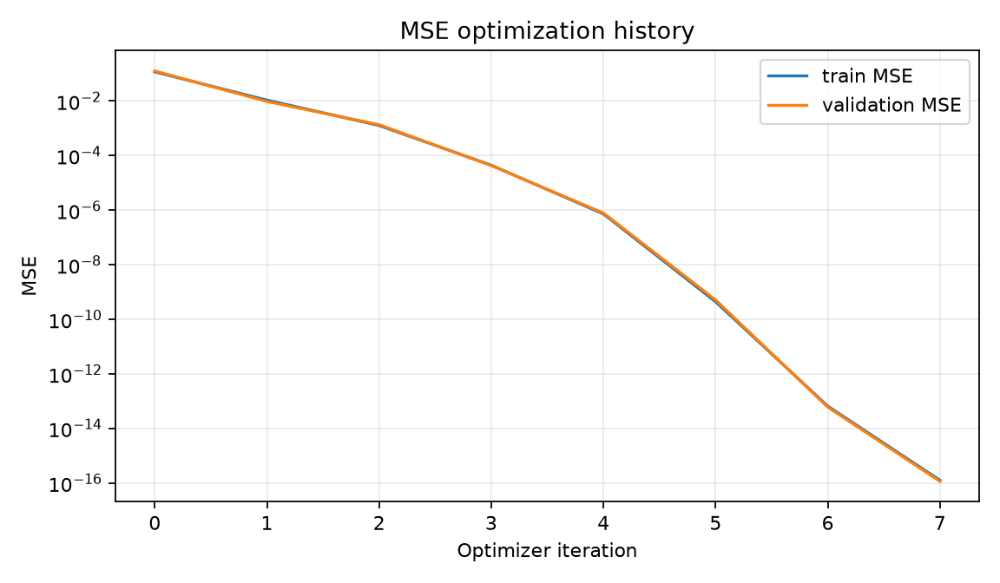
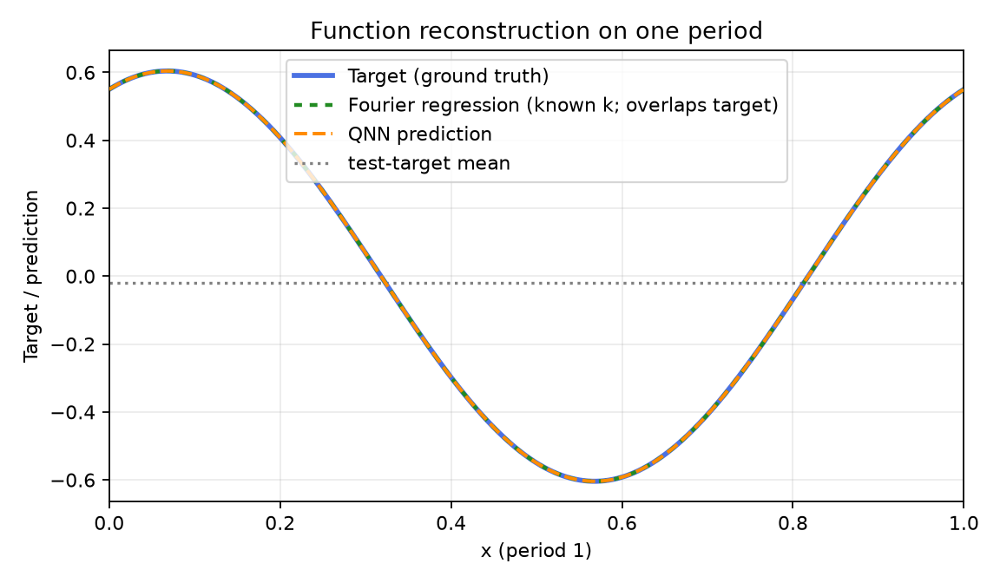
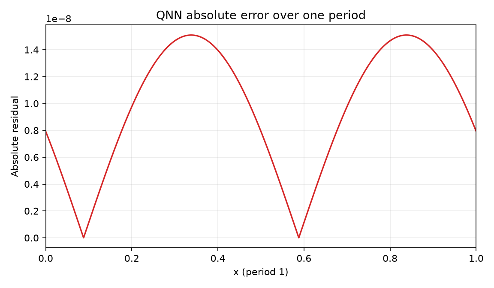
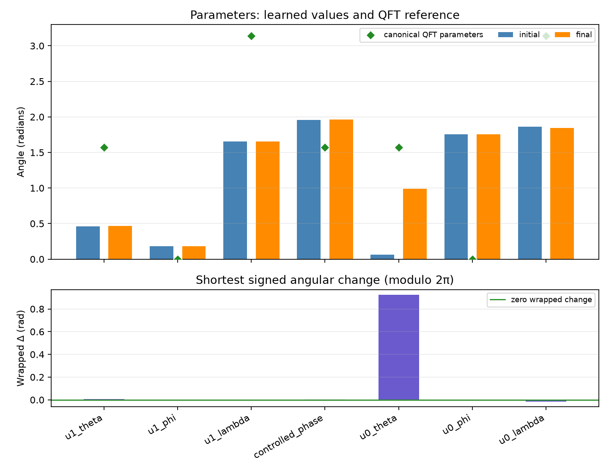

Comparison group: periodic-function-mse-zero-offset-multidataset-ry-angle-encoding-z1-readout
Training loss: MSE only; no Frobenius/process-fidelity term or PINN residual.
Encoding: RY(2πx)|0⟩ on qubit 0, x∈[0,1), period 1.
Readout: ideal Pauli-Z expectation on qubit 1.
Absolute error over one period: mean=9.60777e-09, max=1.50919e-08; defined pointwise as |QNN prediction − target| on the 2048-point periodic grid.
{
"run_id": "20261017T014019470062Z_periodic-function-mse-zero-offset-multidataset_seed-0045_08a24406",
"status": "FINISHED",
"comparison_group": "periodic-function-mse-zero-offset-multidataset-ry-angle-encoding-z1-readout",
"protocol_version": "0.1.0",
"objective": "training-set mean squared error only",
"loss_excludes": [
"process fidelity",
"Frobenius/unitary alignment",
"PINN/physics residual",
"frequency labels"
],
"encoding": "RY(2*pi*x)|0> on q0; x in [0,1), period 1",
"ansatz": "qft2_trainable_u_cp_u_swap",
"readout": "Pauli-Z expectation on q1",
"seed": 45,
"data_seed": 12345,
"optimizer": "L-BFGS-B",
"iterations": 7,
"function_evaluations": 72,
"optimizer_success": true,
"optimizer_message": "CONVERGENCE: NORM OF PROJECTED GRADIENT <= PGTOL",
"elapsed_seconds": 0.04833839999628253,
"initial_train_mse": 0.11733734984391342,
"final_train_mse": 1.2605076967862722e-16,
"validation_mse": 1.152837305763713e-16,
"test": {
"mse": 1.140582371431817e-16,
"rmse": 1.0679805107921291e-08,
"r2": 0.9999999999999993
},
"constant_baseline_test": {
"mse": 0.1836448677457323,
"rmse": 0.42853805868992817,
"r2": -0.007169559567183015
},
"known_frequency_fourier_baseline_test": {
"mse": 7.423650006229753e-33,
"rmse": 8.61606058836041e-17,
"r2": 1.0
},
"spectral_coefficient_mse_k0_to_16": 3.3494703820436914e-18,
"dense_grid_absolute_error_mae": 9.607769202679312e-09,
"dense_grid_absolute_error_max": 1.5091850186221833e-08,
"target_peak_frequency": 1,
"predicted_peak_frequency": 1,
"frequency_peak_correct": true,
"qft_process_fidelity_diagnostic_only": 0.18713116056472215,
"initial_qft_process_fidelity_diagnostic_only": 0.20703761366933787
}




